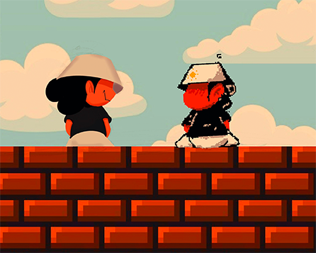

~ Adapting To The Emerging Digital Ecoysystem. 
By Sydney Sanders Sept. 26, 2021
Pixelated: Art By Rene Sanders. Picture this a world, an economy, a society running within a digital game. Where now assests are being traded, stored, valued though these assets are physical.
That's not much a picture anymore. It's more of a happening. A reality now. Aswell as a emerging possiblity.
1. Digital Economy
This is a concpet, or maybe more of a realization that caught my interset and flow of mind. As one may already know are current ecoystem of trading store of values and goods. Lot of that transaction is done via E-Commerce. Mostly in the form of sending your cash flow for a physical good. Now if we catch the current trends and state of how the world going and connect that with the current trends in leading innovation that can topel many of our current societal strucutes. Like the implemntation of Artfical Intelligence Extended Reality Virtual Reality and 5G. What you will begin to see is a happening of opportunity in the now. To adapt for the digital future that awaits us.
I will speak from more of iniution in the following paragraphs just mapping the current trends of human behavior. I want to quickly summarize the obvious realization of how innovated the blockchain, Vr, XR, and 5G will extend the current form of the internet. As many would be familiar with Bitcoin(God-Father of CryptoCurrencty); Which quickly came to be known as the best form of monetary value store to date due to it solving the "double-speding-problem"(google it), and it giviing us a complete verifible form of no-third-party intervention. All this was done using the capabilites of code, math, and some science.
Digital form of money was already here. We transact using Cashapp/Venmo/PayPal... that gave man the easibiity of transfering money as a quicker rate ever then before. The problem that is faced within the monetary systems of transactions. Is that their is a always a central instituation having some governace over our money. As we know money is a valuable techonlogy created by us in helping us conceptualize the transfer of goods and services. The solution to resolve this problem, is this techonolgy doesn't exits within the any central failure point. It's using distributive techonology connected across many nodes. I could go into furture detail, but this isn't want this blog is about. The point is, we had a use-case for digitizing money anyways now we have a use-case of having control over are binary monetary system. This went longer than expected.
2. Virtual Reality
Now this is an exicting field for Gamers and Dreamers alike. Virutal Reality, gives humans the possiblity of extending their creativity to endless and unknown bounds before every actualizing it in the physical realm(that was deep). There out countless use cases of VR being used in such scenario. For example, picture yourself a company that designs buildinds and strucute layout to sell certain products. These usually go through certian stages. Having a team of members fly out the the store location, walk through the store and catch a sense of feel of the layout should be. See, with VR you can cut many of the bandwith and time it takes to do this. Due to current high compunting power and powerful game engines like Unreal,Unity. You can build 3D modeles of the real world and place them within a virtual world. Instead of flying out the the store location. What happens is you place a VR on your head and you begin to navigate and expierence the same story and same feel. From the comfy of your living room. In case scenarios like this. It creates effiency and gives us back our most vaulabe asset; time. But, lets think deeper and thin harder to the opportunites these lay. Lets merge the accumlation of NFTS digital assets powered by blockchain techonlogy. Lets, build a game identical to Fortnite. Though instead of the skin packs you buy with fiat and convert to code that exist on the Epic Games engine. Lets purchase those skins with ETH, and trade them on a open marketplace like Opensea. Thus, creating a digital economy where peoople in games can trade in-game digital assets for value that can now be transferred to a currenty to purchase real-world goods. The list goes on and on.
I would love to write more and explain more concrete and concise topics relating to these new innovated techonolgies. I wish I could, though I'm still in the learning process aswell. This is why I write to try to attempt to understand these techonlogies better. To find a way to learn them and implement them in my day to day life.